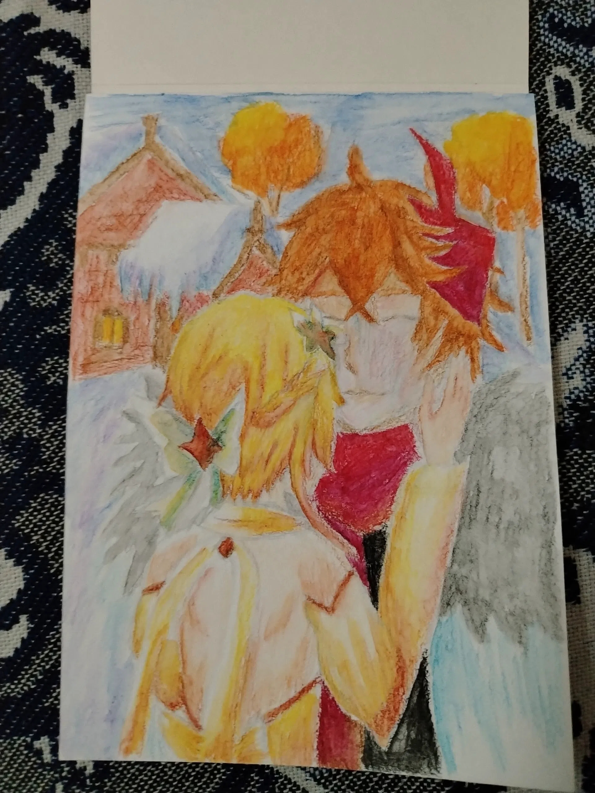
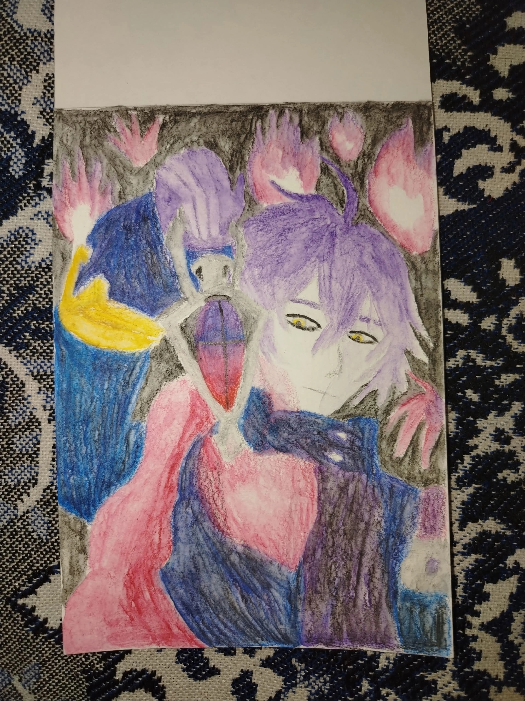
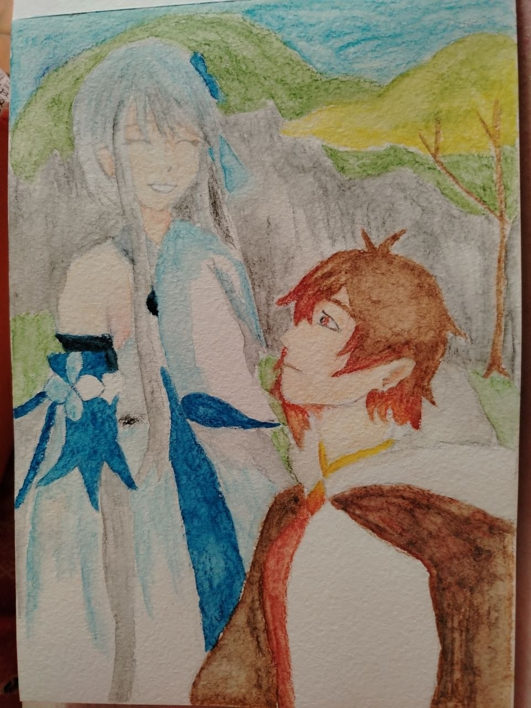
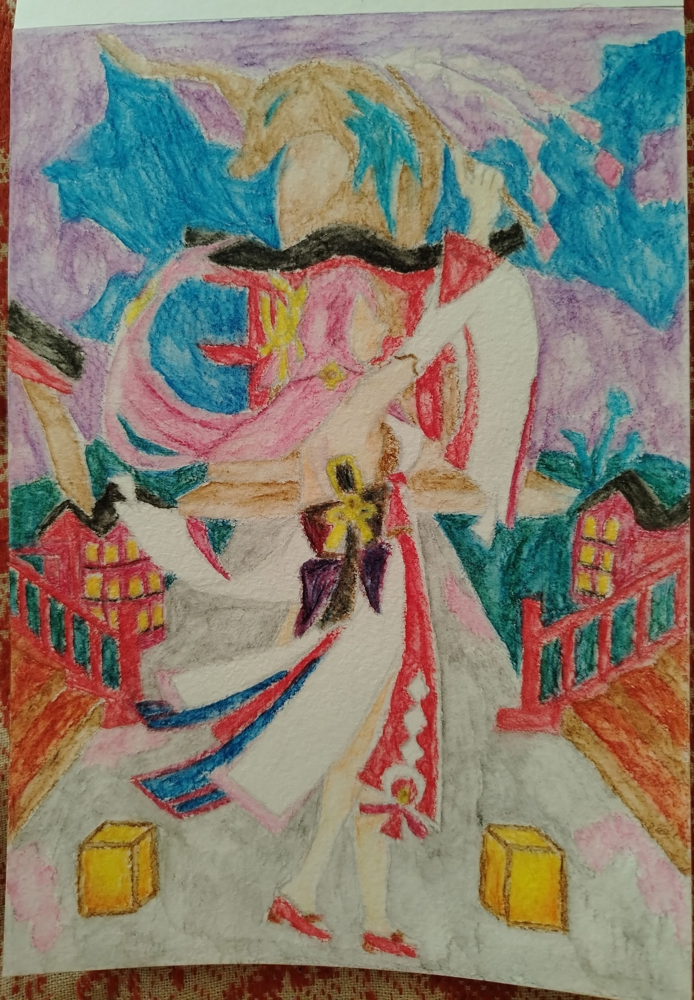
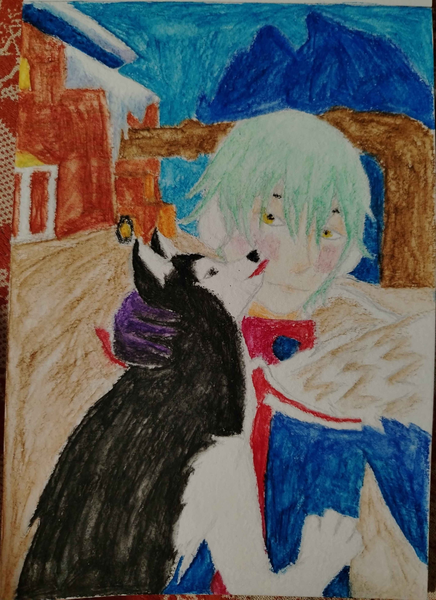
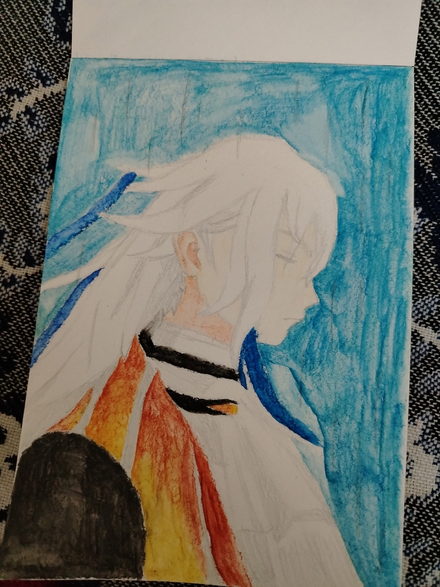
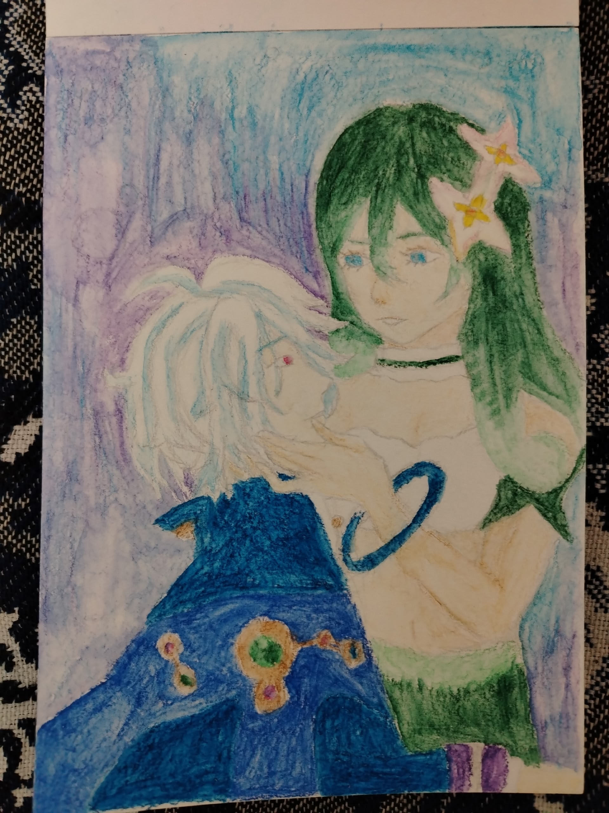

Первый чудесный рисуночек, написанный нежными котячьими лапками с пейзажем родных краёв Тартальи - деревни Морепесок, вместе и в объятиях!! Невероятно нравится котятам, как и всё творчество родненькой
А здесь за основу был взят Флинс, и как воплощение дикой охоты Сигурд, получилось так безупречно, а особенный стиль очень напомнил Ван Гога, звёздную ночь


Маленькие котята очень хотели нарисовать Чжун Ли с его возлюбленной Гуй Чжун ещё в поезде, но дождались возвращения домой, и создали такой шедевр. Он невероятно нравится мне, такой замечательный подбор цветов, композиция и сама тёплая атмосфера
Рисуночек с Яэ Мико стал воплощением прелестной идеи родненькой, объединив много рисуночков, мы создали такое чудо в объятиях, и правда захватывает дух невероятной красотой, и как получилось всё-всё!!!!


Мы долго подбирали чудесный ракурс, но смогли нарисовать такое тёплое фото объятий Алёши с Тугариным, на крылечке их родного дома, и получилась такая прелесть!! Солнышко безупречно рисует всё-всё!!!
Воплощение страшного суда, и кадр из финальной анимации Фонтейна, вынесение приговора всем жителям, так невероятно переданы эмоции и само состояние момента затишья перед бесподобным

Нарисованный нежными любименькими лапками, распевая песенки оперных котят и ласкаясь в объятиях, такой чудесный рисуночек Мити и Водяницы!! Невероятная красота, аккуратность, безупречные пропорции и такие старания малышки. Моя самая-самая лучшая на свете, мииии!!!